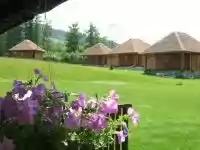

SRBIJA
Gostoljublje je zajedno sa obližnjim etno selima deo mnogo većeg projekta pod nazivom Eko selo. Nalazi se u okviru sela Mionice, na obroncima Divčibara,
i na nadmorskoj visini od 550 metara. Ovo etno selo zauzima površinu od jedanaest hektara i ustvari predstavlja jedno gazdinstvo namenjeno kako seoskom
turizmu, tako i proizvodnji zdrave hrane.
Celo Gostoljublje je jedna očaravajuća brdska atrakcija sastavljena od Vajata, tradicionalnih drvenih srpskih kuća, među kojima je jedna stara oko dve
stotine godina.

Svaki vajat je opremljen u duhu srpske tradicije i pruža savršen komfor, posebno posle mnogobrojnih aktivnosti, koje turisti mogu upražnjavati u toku
svog boravka u Gostoljublju. Posetioci se mogu oprobati u spremanju zimnice, sakupljanju sena, branju malina, sakupljanju šljiva, lekovitog bilja ili
šumskih plodova.
Pored aktivnog odmora i upoznavanja načina života na selu, ponudu ovog kraja krasi netaknuta priroda, šume, livade, puteljci, proplanci, izvori i
potočići. Turisti svakodnevno mogu uživati u šetnjama obeleženim pešačkim stazama, koje se završavaju na brdu Subjel. Ovo brdo je posebno zbog svoje
legende o izgubljenom blagu i predstavlja pravu atrakciju za svakog avanturistu.
U letnjem periodu osveženje posetiocima pruža popularno izletište Skakavački vodopadi, gde se održava tradicionalna manifestacija „Dani seoskog turizma“
. A tu su naravno i Divčibare, poznat planinski centar i vazdušna banja, nadaleko poznata po svojim lekovitim svojstvima.